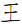

Solve the crossword and translate the Chinese characters in the clues, reading in strict numerical order (rather than across clues followed by down clues).

= “fill in the letters of the Monkey King’s name”. Which breaks down as follows:
= Fill
= Monkey King
= Name
= Letters
This instructs solvers to shade in the letters of SUNWUKONG (the Monkey King from “Journey to the West”) wherever they appear. This reveals another Chinese character, , which means FOOT, the answer to the puzzle.